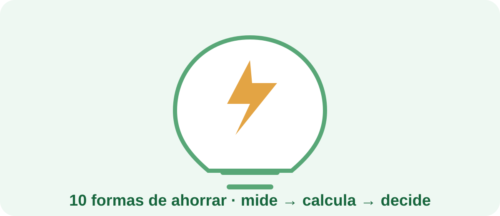

Diez medidas prácticas para reducir consumo antes de gastar dinero en nuevos dispositivos.
1. Mide los aparatos que más utilizas. 2. Evita dejar equipos innecesariamente encendidos. 3. Programa dispositivos cuando tenga sentido. 4. Revisa iluminación poco eficiente. 5. Ajusta climatización a temperaturas razonables. 6. Comprueba consumos en espera. 7. Mantén limpios filtros y equipos. 8. Compara el consumo real de aparatos antiguos. 9. Revisa tu potencia contratada si tus necesidades han cambiado. 10. Utiliza herramientas de seguimiento para comprobar si una medida realmente funciona.
La idea central es sencilla: primero mide, después calcula y finalmente decide si necesitas comprar algo.
Recurso divulgativo del IDAE para complementar esta guía con medidas prácticas de eficiencia energética.
En AhorraEnCasaYa intentamos separar el cálculo, la medición y la compra. Una recomendación útil debe explicar qué problema resuelve y qué límites tiene.
Si quieres pasar de la estimación a los datos reales, estos productos pueden servir como punto de partida:
Enlaces de afiliado de Amazon. El precio y la disponibilidad que aparezcan en Amazon pueden cambiar.